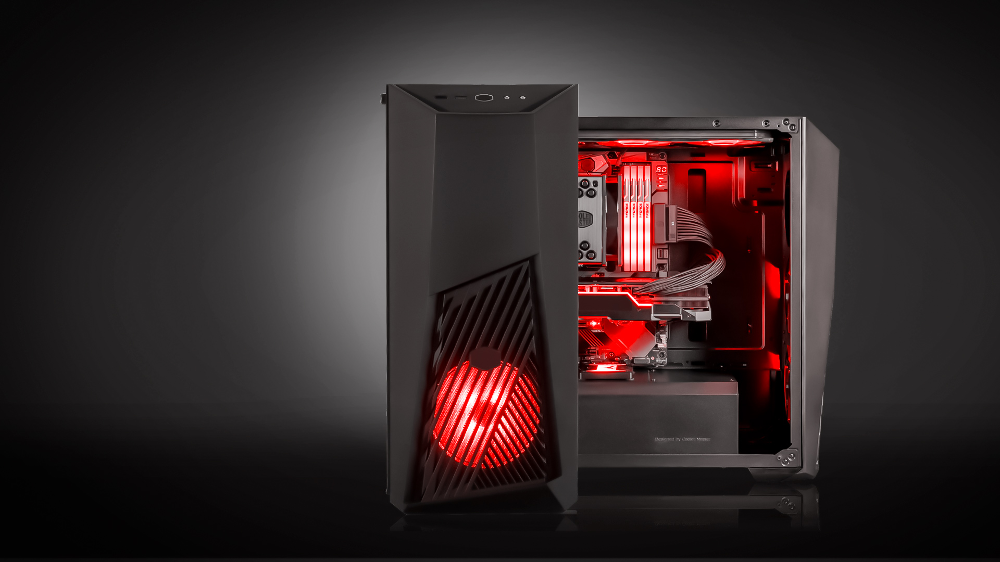

O PC gamer virou objeto de desejo para muitos entusiastas da tecnologia — e não apenas para jogadores. Em geral, dispositivos do tipo são mais potentes do que os demais computadores, com motivos de sobra para serem desejados por editores de vídeo, de foto e até mesmo por programadores. No entanto, muitos usuários ficam em dúvida sobre quais peças e mecanismos fazem uma máquina ser considerada propícia para jogos ou outras atividades mais pesadas. Para te ajudar a entender o que de fato pode definir um PC como gamer, o TechTudo apresenta abaixo mais informações sobre esse tipo de computador.
pc gamer atlas
Um PC gamer necessariamente precisa oferecer mais performance gráfica, o que faz com que, normalmente, seja necessária a adoção de uma placa de vídeo dedicada. Diferentemente de placas de vídeo integradas ao processador, elas contam com processador, memória e conexões próprias, com promessa de mais desempenho.
Em um PC gamer, o processador também compartilha de um certo protagonismo — afinal, além da parte gráfica, existem diversos outros cálculos e processos que precisam ser realizados durante a reprodução dos jogos. Além disso, gerar mais quadros por segundo (FPS) na tela é uma tarefa que também utiliza muito do poder do processador além da GPU, de modo que, é sempre interessante equilibrar o desempenho da CPU e GPU no sistema.
Enquanto em um PC para uso comum, 8 GB de RAM DDR4 tendem a ser mais que o suficiente para a maioria das tarefas, muitos jogos modernos recomendam que os sistemas possuam ao menos 16 GB. Muitos títulos atuais ainda vão se beneficiar de volumes maiores de memória.
Mesmo a placa de vídeo tendo sua memória dedicada para o vídeo, existem diversos processos que são executados durante uma jogatina que vão fazer com que as memórias do sistema também sejam exigidas. Por isso, ter mais memória RAM — e de preferência em mais de um módulo — é mais uma característica comum em computadores gamer.
A taxa de atualização se refere à rapidez com a qual o monitor do PC vai reagir aos dados processados. Assim, quanto maior ela for, mais fluida será a experiência ao jogar ou assistir a filmes e séries. Em jogos competitivos, é interessante considerar monitores com cerca 144 Hz, que podem ser mais caros.